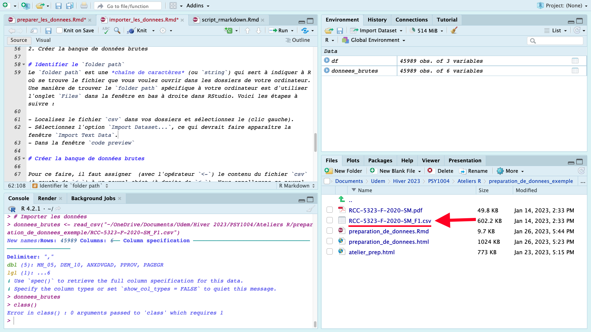
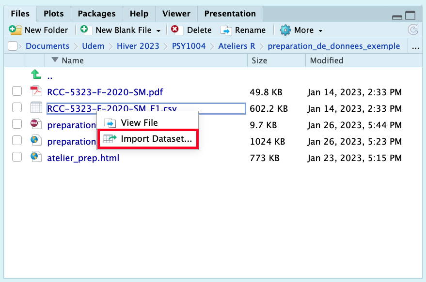
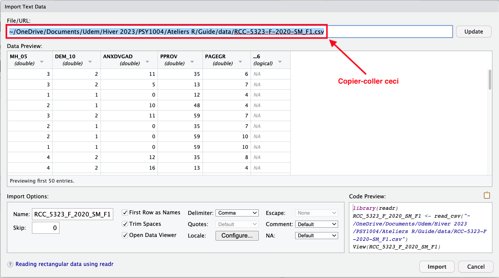

Important : Ce guide assume que vous savez comment :
Vous pouvez cliquer sur les liens ci-dessus pour consulter les guides associées.
Pour analyser des données, il faut tout d’abord
avoir des données à analyser! Dans ce guide, nous allons
apprendre comment importer un fichier de données de type
csv dans R.
L’acronyme csv signifie Comma Separated
Variables. Je vous montre comment importer ce format en particulier
car c’est un type de fichier très simple qui constitue en quelque sorte
le « standard » pour le partage des banques de données en science —
c.-à-d. des banques de données où les colonnes représentent des
variables et les rangés représentent des observations. Sachez qu’il est
possible (et généralement tout aussi facile) d’importer d’autres type de
fichier de données dans R (ex.: Excel = .xlsx, SPSS =
.sav).
À titre d’exemple, je suis aller chercher une banque de données sur
la plateforme Odesi (comme vous aurez à le faire pour votre TP). Le
fichier de données (RCC-5323-F-2020-SM_F1.csv) ainsi que la
documentation Odesi concernant son contenu
(RCC-5323-F-2020-SM.pdf) sont disponibles sur Studium. Je
vous invite à télécharger ces documents pour suivre cette démonstration.
Voici comment y accéder :
Ateliers R >
Importer et préparer les données (exemple)
readrNous aurons besoin d’activer le package readr puisqu’il
plusieurs fonctions permettant de lire des fichiers de données.
Spécifiquement, la fonction qui nous intéresse est
read_csv(). Comme nous l’avons vue dans le guide
package.htlm, la syntaxe suivante permet d’activer le
package readr:
library(readr)Une fois le package activé, il vous reste deux choses à faire pour importer votre base de données :
Identifier le folder path du fichier
.csv dans votre ordinateur.
Créer la banque de données brutes
folder pathLe folder path est une chaîne de caractères (ou
string) qui sert à indiquer à R où se trouve le fichier que
vous voulez ouvrir dans les dossiers de votre ordinateur. Une manière de
trouver le folder path spécifique à votre ordinateur est
d’utiliser l’onglet Files dans la fenêtre en bas à droite
dans RStudio. Voici les étapes à suivre :
Localiser le fichier csv dans vos dossiers et
sélectionner le (clic gauche).

Sélectionner l’option Import Dataset.... 
Dans la section File/URL: de la fenêtre
Import Text Data qui apparaît, copier-coller le
folder path (chaîne de caractères entre guillemets
"") 
Maintenant qu’on a le folder path, il est très facile de
créer la banque de données brutes. Pour ce faire, il faut
assigner (avec l’opérateur <-) le
contenu du fichier csv (à gauche de <-) à
un nouvel objet (à droite de <-). Nous appellerons ce
nouvel objet donnees_brutes par soucis de clarté. Voici la
syntaxe (n’oubliez pas de remplacer le folder path!) :
donnees_brutes <- read_csv("folder path") On peut maintenant afficher l’objet qu’on vient de créer en appellant son nom :
donnees_brutes## # A tibble: 45,989 × 6
## MH_05 DEM_10 ANXDVGAD PPROV PAGEGR ...6
## <dbl> <dbl> <dbl> <dbl> <dbl> <lgl>
## 1 3 2 11 35 6 NA
## 2 3 2 5 13 7 NA
## 3 1 1 0 12 4 NA
## 4 2 1 10 48 4 NA
## 5 3 2 11 59 7 NA
## 6 2 1 0 35 7 NA
## 7 2 1 0 59 10 NA
## 8 1 1 0 59 10 NA
## 9 4 2 12 35 8 NA
## 10 4 2 16 13 4 NA
## # … with 45,979 more rowsSi vous obtenez le output ci-dessus, félicitation! Vous êtes prêt.e à
passer au guide suivant (preparation_de_donnees.html).
À noter pour le TP : Dans votre travail
pratique, vous n’aurez pas besoin de présenter et expliquer les
étapes nécessaires pour importer vos données. Le code
nécessaire pour importer les données sera simplement inclu au bloc de
code setup au tout début de votre script .Rmd.
Ce bloc de code ne s’affiche pas dans le document final à cause de
l’argument include=FALSE dans les paramètres du bloc. Pour
plus de détails, veuillez consulter la section 3.1 du guide Rédiger un script RMarkdown.